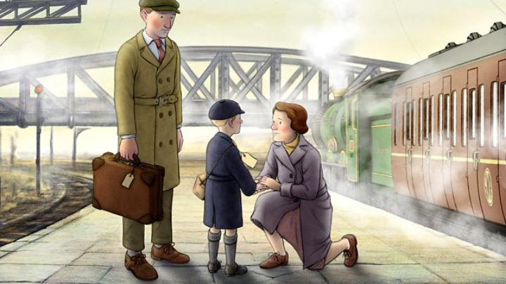

The name Raymond Briggs is about as well known in England as Hayao Miyazaki in Japan or John Lasseter in the USA. Oddly, Raymond has received respect, but not significant fame, outside the United Kingdom. Most people will at least vaguely recognize the illustrator's characters from "The Snowman," either from the children's book or the classic animated film, the film being a television tradition in England much in the same way as "A Charlie Brown Christmas." His books and graphic novels have been adapted into classic animated shorts and features multiple times, each with a distinct soft design in its world and characters, with simple round faces, beady eyes and a kind smile, as if living in a world of clouds. It's no wonder that the 2016 film "Ethel & Ernest" would be an exciting achievement for the country. Not much of Briggs' work had been adapted recently, and it was a nice idea to make a new feature film while the artist was still alive to oversee and view the finished product. Based on one of his graphic novels, it is a love letter to his Briggs' parents, Ethel and Ernest Briggs, starting with the moment the couple first met, and ending with the deaths, spanning decades of a very ordinary, and therefore remarkable, English family. The production team shows their respect for Briggs himself and his family at the very start of the movie: it opens with a live-action shot of a camera panning over a sunbathed drawing table as Briggs himself works on an illustration to introduce the story. Despite the significance Briggs has and the sense of pride fans in England had in the production, "Ethel & Ernest" wouldn't be shown in the USA until a full year later, and the eventual home video release was in 2018, only on DVD, at a time when 4K Ultra Bluray was slowly making its mark in the space. Truthfully, after such a weak level of excitement stateside, I was happy I could get any release at all to finally see the movie myself.And the pride England has for the film is well-placed: just as much as the comic was a love letter to Briggs' parents, the film is a love letter to them, to Briggs himself, and to the history of England during the 1900's. The animation is fantastic. Naturally, any modern film wouldn't be able to fully retain the old fashion hand-drawn feel of the short films made over thirty years ago (and a fascinating included making-of featurette has them trying to justify how digitally-drawn animation is simply better suited for televisions and projection than paper), but on its own merits, this is one of the prettier films to come from the country in recent memory. The environments are beautifully detailed and great camera shots remind of the benefits to digital methods. The characters themselves use subtle movements and facial expressions... well, as subtle as a worried mother and energetic father might be in real life. The acting is good, well-cast with prominent actors that convey a familiar tone that makes these characters easy to compare to anyone's parents. The music is nice, although special moments, like Paul Mccartney's special song for the end credits, doesn't stand out as much as the producers likely thought, compared to the sweeping opening orchestral score. It's generally a treat for the senses.The story itself is harder to review, because there really isn't a story in the traditional sense. This plays out as a nostalgic biography. Ethel and Ernest don't go through any events that were unusual for the time period, and don't come to any special conclusions. Their first meeting is romantic, but their deaths at the end are straightforward, dying of old age, one feeling a temporary loneliness until they too are gone. Despite the lack of a story, it's fascinating to see a slice of English history play out through the eyes of ordinary people. Ernest comes from a somewhat poorer and less proper upbringing than Ethel, and both often discuss their differences in values and poltiical opinion as the country goes through changes over the years. World War II was visably a scary time for them, especially since their child Raymond was so young at the time. Later on, their opinion of Raymond as a teenager and young adult going to art school is a relatable one. It's funny to see their reactions to their first radio, and eventually their first home telephone and television. Throughout it all, despite any conflicts and arguments, its clear they have a great love for each other that knows no bounds, just like any family would hope to have. On paper, it is a boring story to sit through, but it is still remarkable for how unremarkable it is, and as a compliment to the film's director, artists, and Briggs' story itself that the film is as watchable as it is. The excitement one has for "Ethel & Ernest" will vary based on their knowledge of the artist behind it, both because of his legacy and because the story involves much of his personal life. Aside from that, it is an important representation of European history and English culture. If that merit has any weight to you, you'll find yourself enjoying this film quite a bit.
- "Ani" More reviews can be found at : https://2danicritic.github.io/ Previous review: review_Ernest_and_Celestine Next review: review_Evangelion_1.11_-_You_Are_(Not)_Alone